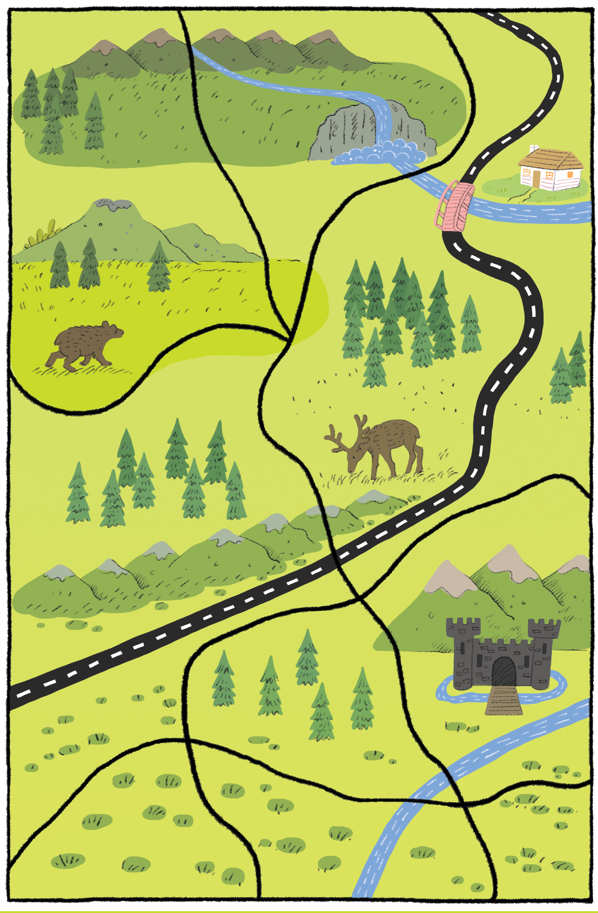
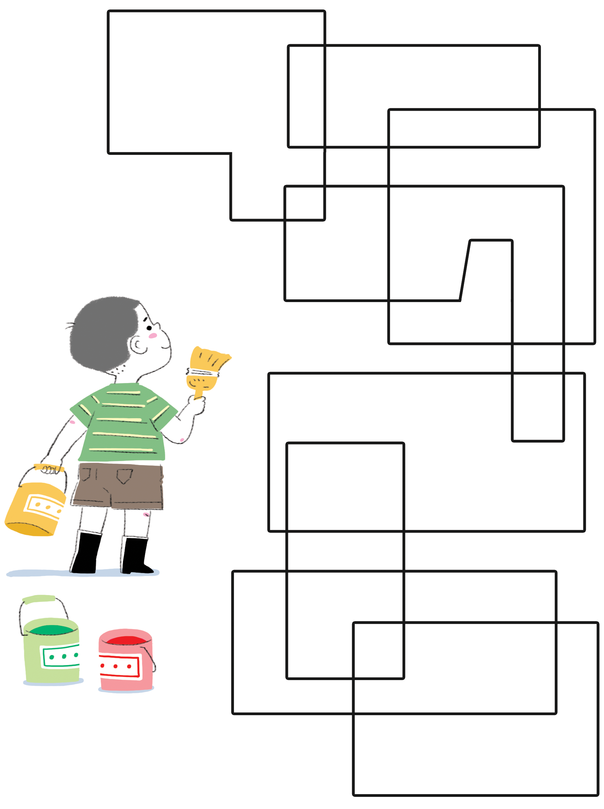
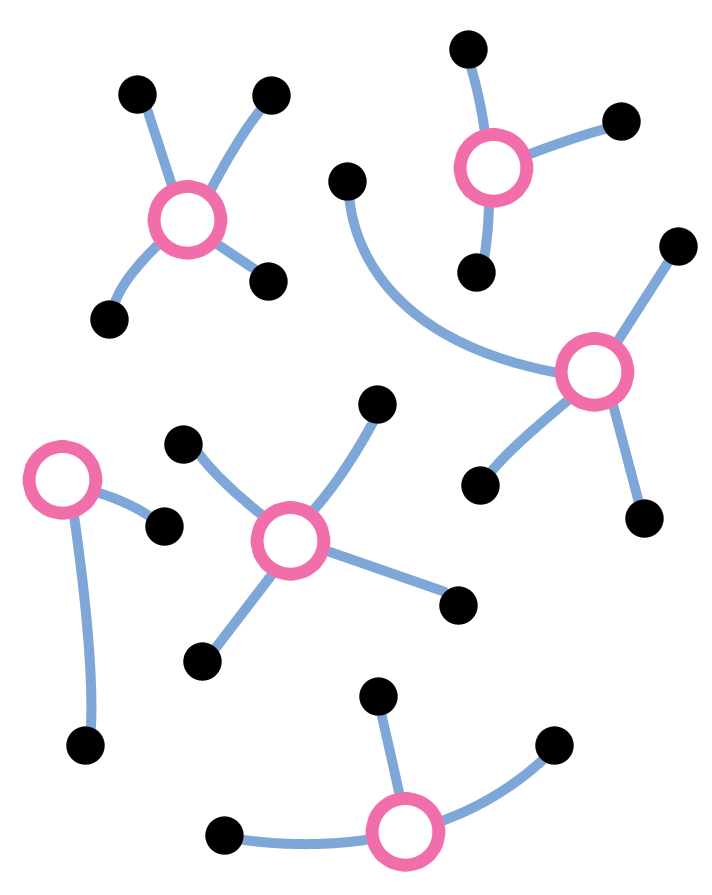
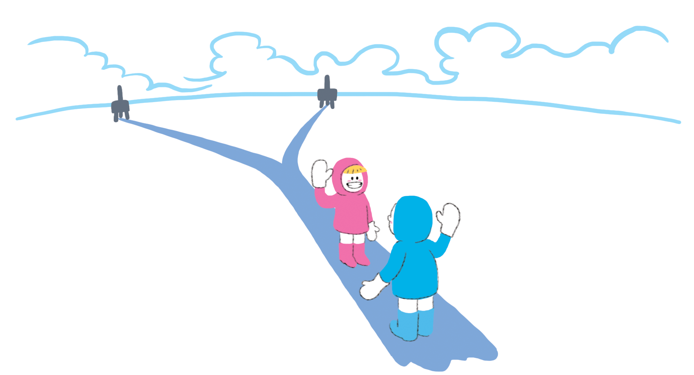
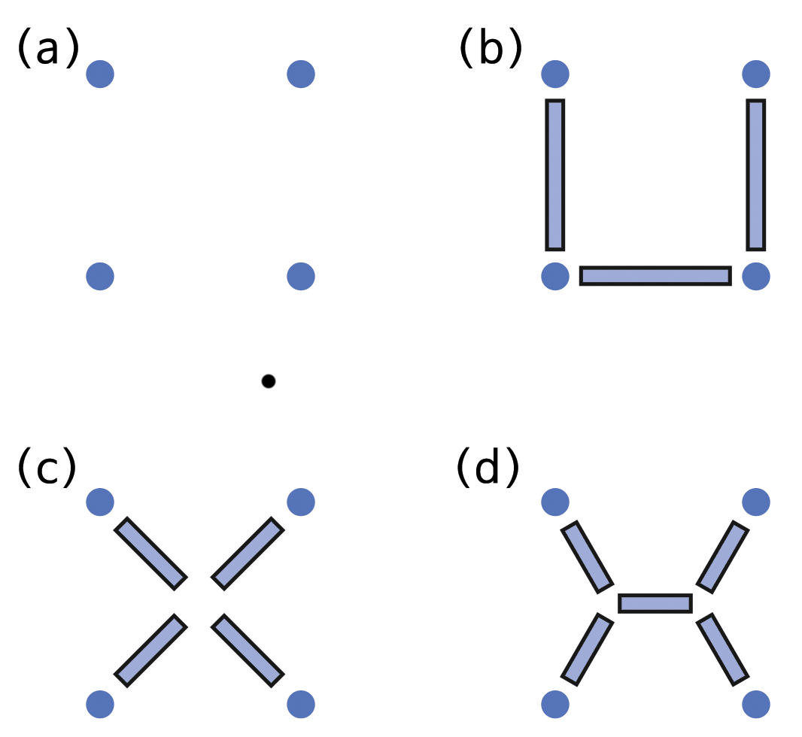
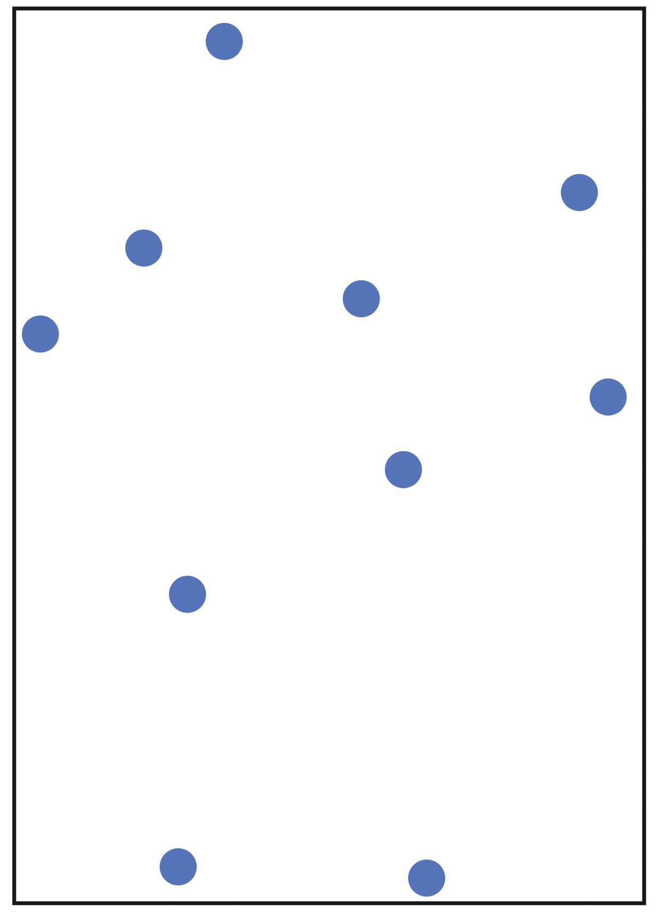
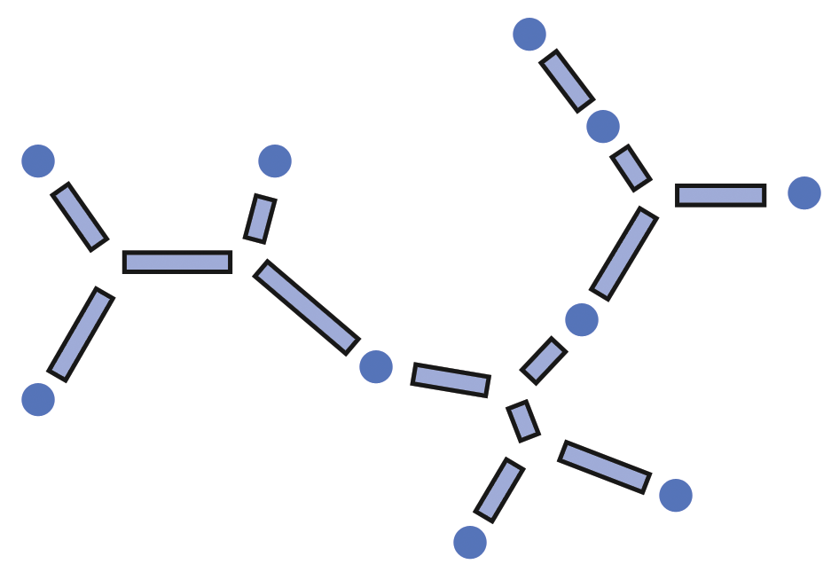
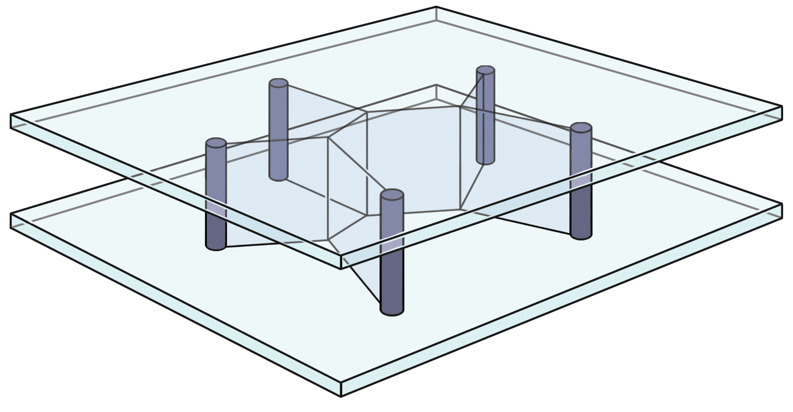

Chapter 4 제 4 부
정말 어려운 문제 — 난해성(intractability)
- 불쌍한 지도 제작자 — 그래프 색칠하기(Graph Coloring)
- 여행자 도시(Tourist town) — 지배 집합(Dominating Sets)
- 얼음길(Ice roads) — 스타이너 나무(Steiner Trees)
다루기 힘듦(Intractability)
컴퓨터에게 조차도 너무 어려운 문제가 있을까요? 예, 있습니다. 20번째 활동에서 살펴보겠지만, 단지 대화하는 것—채팅(chatting)—조차도 컴퓨터가 할 수 없다. 컴퓨터가 말을 할 수가 없어서가 아니라, 컴퓨터가 의미있는 것을 이해하고 생각해 낼 수가 없기 때문이다. 하지만, 여기서 논의하는 정말 어려운 문제는 이런 종류가 아니다. 사실 컴퓨터가 대화를 하지 못하는 것은 아니다. 사람이 어떻게 대화를 하는지 알지 못해서, 컴퓨터에게 무엇을 수행하도록 지시할 수 없다. 이번 섹션에서 컴퓨터에게 수행 명령을 지시—프로그램 작성—하기는 쉬우나, 사람이 원하는 것을 컴퓨터가 수행하지 못하는 종류의 문제를 살펴본다. 이유는 컴퓨터가 답을 가져오는데 아마도 수백만년 시간만큼, 작업 소요시간이 너무 오래 걸린다.
제 2부 알고리즘 활동에서 컴퓨터 프로그램을 좀더 효율적으로 작성하는 방법을 살펴보았다. 이번 섹션에서 효율적인 어떠한 해결책도 알려지지 않은 문제를 살펴볼 것이다. 즉, 컴퓨터가 문제를 해결하는데 수백만년 걸리는 문제다. 그리고 나서 오늘날 컴퓨터과학에서 가장 커다란 미스터리로 남은 것과 조우한다. 어느 누구도 이러한 종류의 문제를 해결하는 좀더 효율적인 방법이 존재하는지 모른다. 아마도 어떤 사람도 좋은 방식을 아직 발견하지 못했거나 좋은 방식이 존재하지 않기 때문인지도 모른다. 둘 중에 어느 것이 맞는지 알지 못한다. 그리고 그것이 끝이 아니다. 설사 매우 다른 문제처럼 보이지만, 만약 효율적인 방법을 사용하여 문제를 해결할 수 있다면, 이러한 효율적인 방법을 전환하여 관련된 모든 문제를 해결할 수 있기 때문에 동등한 수천개 문제가 있게 된다. 이번 활동에서 이런 종류의 문제를 학습한다.
선생님에게
이번 섹션에는 활동이 세개 있다. 첫번째 활동은 지도를 색칠하고, 인접한 나라를 다른 색깔로 색칠하기는데 얼마나 많은 색깔이 필요한지 계수한다. 두번째 활동은 간단한 도로지도를 사용하는 능력이 필요하다. 거리에 아이스크림 차량을 배치해서 사람들이 너무 멀리가지 않고 아이스크림을 살 수 있게 한다. 세번째 활동은 야외활동으로 줄과 못을 사용해서 집합의 점들을 연결하는 짧은 네트워크를 구성하는 방법을 탐색한다.
복잡성(complexity)에 대한 아이디어를 실습 활동을 통해서 공감하게 된다. 말로 구술하기는 매우 간단한 문제가 해결하기에는 너무나 어려운 문제가 해당된다. 그리고, 이러한 문제가 결코 난해하지 않다. 학교 시간표 작성, 도로 건설, 매핑 등 같은 일상 생활에서 발생하는 실무적인 문제다. 컴퓨터적 토대는 각 활동 마무리에 있는 “컴퓨터 과학 핵심 개념”에 설명된 “NP-완전성(NP-completeness)”이라고 불리는 개념에 기반한다. 활동 자체는 임의 순서로 다뤄질 수 있지만, 각 섹션은 순차적으로 읽어 내려가도록 구성되었다. 마지막을 읽어 내려갈 때 즈음, 현대 컴퓨터 과학에서 가장 중요한 미해결 문제(open question)에 대한 확고한 이해를 갖게 된다.
제4부에 대한 기술명칭은 “난해성(intractability)”인데 해결하기 어려운 문제가 난해하다고(intractable) 불리기 때문이다. 당기다 끌다는 의미를 가지는 라틴어 tractare 에서 유래해서 현재는 다루기 쉬운(tractable), 휘기 수운, 유순한 이라는 의미로 사용된다. 난해한 문제(intractable problem)는 쉽게 다룰 수 없는데 이유는 답을 가져오기까지 너무나 오래 걸린다. 비밀스럽게 드릴지 모르지만, 난해성은 일상에서 매우 중요한다. 왜냐하면, 이 분야에서 돌파구가 마련되면 많은 다른 연구분야에 엄청난 파생결과가 발생한다. 예를 들어, 대부분의 암호화 코드는 어떤 문제의 난해성에 기반한다. 그래서 효율적인 해결책을 발견한 범죄자가 신나서 암호를 풀어 상업적으로 판매를 하거나 혹은 좀더 단순하게 거짓 운행 거래를 생성할 수 있다. 제5부에서 암호기법(cryptograph)에서 살펴볼 것이다.
4.1 가난한 지도 제작자 - 그래프 색칠하기
4.1 개요
많은 최적화 문제는 특정 사건이 동일 시간에 발생할 수 없거나, 집합 객체에 소속된 구성원이 서로 인접할 수 없는 상황을 포함된다. 예를 들어, 수업 시간표나 회의 일정표를 작성하는 사람은 관련된 모든 사람의 제약조건을 만족시키는 문제에 맞닥드리게 된다. 이러한 어려움 중의 상당부분은 지도 색책 문제로 귀결된다. 이 문제에서 지도에 있는 국가들, 국경을 맞대고 있는 나라를 다른 색깔을 정해서 칠해야 한다. 이번 활동은 이 문제에 관한 것이다.
4.1 교과학습 연계
- 수학: 숫자 2 레벨 이상. 다른 진법의 숫자 탐색. 이진수로 숫자 표현하기.
- 수학: 대수 2 레벨 이상. 순차 패턴 계속하기. 패턴 규칙 기술하기. 이진 패턴과 관계
4.1 기술
- 문제 해결 (Problem solving).
- 논리적 추론 (Logical reasoning).
- 알고리즘 절차와 복잡성 (Algorithmic procedures and complexity).
- 직관을 의사소통하기 (Communication of insights).
4.1 나이
- 7세 이상
4.1 학습 교재
- 화이트보드/칠판 혹은 유사한 필기면.
- 아이마다 필요한 것
- 워크쉬트 사본 한장 이상
- 이동 가능한 작은 컬러 마커 (예, 보드 게임 패, 포커칩(poker chips))
- 서로 다른 네가지색 크레용 (혹은 칼라연필, 싸인펜)
4.1.1 언플러그드 활동 동영상 {coloring-avi}
| 한글 동영상 | 영어 동영상 |
|---|---|
| 애타게 찾고 있습니다. | 애타게 찾고 있습니다. |
4.1.2 그래프 색칠하기 {graph-coloring-intro}
4.1.2.1 들어가며
이번 활동은 이야기를 중심으로 돌아간다. 학생이 지도에 있는 나라를 색칠하는 지도 제작자를 돕는다. 국경을 맞대고 있는 나라가 다른 색깔이기만 하면, 나라를 무슨 색으로 칠하든지 문제가 되지 > 않는다.
예를 들어, 다음 지도에는 나라가 네개 있다. 만약 Northland를 빨간색으로 칠한다면, Westland와 Eastland는 빨간색이 될 수 없다. 왜냐하면, Northland와 국경을 맞대고 있어서 경계를 구별할 수 > 없기 때문이다. Westland를 녹색으로 칠할 수 있고 Eastland도 녹색으로 칠하는 것이 용인된다. 왜냐하면 Westland와 국경을 맞대고 있지 않기 때문이다. (만약 두 나라가 한 점에서 만난다면, 국경을 공유하는 것으로 간주되지 않아서, 동일한 색깔을 칠할 수 있다.) Southland를 빨간색으로 색칠해서 지도상에 단지 두가지 색으로 색칠을 끝마칠 수 있다.
지도 제작자가 가난해서, 크래용을 많이 사용할 수 없다. 그래서, 가능한 적은 수의 크래용을 사용하는 아이디어를 내보자.
4.1.2.2 토론
학생들에게 해결하려는 문제를 기술하게 하고, 칠판에 색칠하는 프로세스를 시연하게 한다.
첫번째 워크시트 사본을 나눠준다. 단지 두가지 색을 사용하여 올바르게 지도를 색칠할 수 있다. 단지 두가지 색으로 제한하는 것이 다소 도전과제스럽게 다가올 수 있지만, 더 많은 색을 요구하는 지도와 비교하여 간단한 과제가 된다. 왜냐하면, 각 나라를 무슨 색으로 칠할지 선택지가 그다지 많지 않기 때문이다.
학생들에게 지도를 단지 두가지 색만을 가지고 색칠하게 해본다. 이 과정에서 “해야되는 필수” 규칙을 학생들이 발견한다: 한 나라를 색칠하게 되면, 국경을 맞대고 있는 나라는 반대색으로 색칠하는 규칙. 모든 나라를 색칠할 때까지 반복적으로 이 규칙이 적용된다. 규칙을 알려주기보다 학생들 스스로 규칙을 발견할 수 있다면 최선이다. 왜냐하면 학생들에게 프로세스에 대해서 더 나은 직관을 전달하기 때문이다.
학생들이 각 연습문제를 수행하면, 다음 연습문제를 전달한다.
색깔이 칠해진 패(counter) 같은 플레이스홀더(placeholder)를 사용하는 것이 낫다는 것을 학생들이 알아챌 수도 있다. 왜냐하면, 나라를 바로 색칠하는 것보다 마음이 바뀔 때 좀더 쉽게 색을 반영할 수 있기 때문이다.
고학년 학생들에게, 찾은 색깔 숫자가 최소인지를 어떻게 알 수 있는지 설명하게 한다. 예를 들어, 이번 지도에는 최소 삼색이 필요한데 이유는 나라 세개 그룹이 있는데, 각각의 나라는 다른 두 나라와 국경을 맞대고 있기 때문이다.
만약 학생이 모든 지도를 빨리 끝마치게 된다면, 다른 5가지 색이 필요한 지도를 제작하게 한다. 어떤 지도라도 단지 4가지 색으로 칠할 수 있다는 것이 증명되었다. 그래서 숙제로 준 작업은 한 동안 학생에게 시간이 걸릴 것이다. 경험상 학생이 믿기에 5가지 색이 필요한 지도를 빨리 제작할 수 있다. 하지만, 지도에서 4가지 색으로 색칠할 수 있는 방법은 항상 찾을 수 있다.
4.1.3 워크시트 활동: 그래프 색칠하기 1 {graph-coloring-worksheet-01}
가능하면 적은 수의 색을 사용하여 지도에 있는 나라들에 색을 칠하세요. 하지만, 국경을 맞대고 있는 인접한 어떠한 나라도 동일한 색깔이면 되지 않도록 확실히 하세요.

4.1.4 워크시트 활동: 그래프 색칠하기 2 {graph-coloring-worksheet-02}
가능하면 적은 수의 색을 사용하여 지도에 있는 나라들에 색을 칠하세요. 하지만, 국경을 맞대고 있는 인접한 어떠한 나라도 동일한 색깔이면 되지 않도록 확실히 하세요.

4.1.5 워크시트 활동: 그래프 색칠하기 3 {graph-coloring-worksheet-03}
가능하면 적은 수의 색을 사용하여 지도에 있는 나라들에 색을 칠하세요. 하지만, 국경을 맞대고 있는 인접한 어떠한 나라도 동일한 색깔이면 되지 않도록 확실히 하세요.
4.1.6 워크시트 활동: 그래프 색칠하기 4 {graph-coloring-worksheet-04}
가능하면 적은 수의 색을 사용하여 지도에 있는 나라들에 색을 칠하세요. 하지만, 국경을 맞대고 있는 인접한 어떠한 나라도 동일한 색깔이면 되지 않도록 확실히 하세요.

4.1.6.1 변형과 확장
여기 보여진 것처럼. 단지 두가지 색을 사용하여 지도를 제작하는 간단한 방법이 있다. 다음 지도는 닫힌 폐곡선(시작하는 지점과 끝점이 만나는 선)을 중첩해서 그렸다. 폐곡선 상단 위에, 이런 곡선을, 임의의 모양으로 임의의 숫자만큼 그릴 수 있다. 그리고 이러한 지도는 단지 두가지 색으로 항상 색칠할 수 있다. 학생들은 이런 유형의 지도를 만들어서 실험해 볼 수 있다.
종이 평면이나, 구면에 그린 지도를 색칠하기에는 색깔 네개면 충분하다. 토러스(도넛 모양)같은 괴상한 표면에 그려진 지도를 색칠하는데 얼마나 많은 색이 필요할지 궁금한데, 과학자도 마찬가지다. > 이 경우, 5가지 색이 필요할지도 모른다. 항상 5가지 색이면 충분하다. 학생들이 이러한 실험을 진행하고 싶을지도 모른다.
지도 색칠 문제에는 흥미로운 많은 변형이 있어서 현재 알려지지 않은 방향으로 이끌 수도 있다. 예를 들어, 만일 내가 나만 종이위 지도에 색을 칠한다면, 내가 똑똑하게 작업하고나면 네가지 색깔이면 충분하다는 것을 안다. 하지만, 혼자서 작업하는 대신에, 무능한 (혹은 악의적인) 동료와 공동 작업을 하고, 교대로 나라마다 색을 칠한다고 가정하자. 나는 똑똑하게 작업하는 반면에 지도위에 나라마다 색을 칠하는 작업을 돌아가며서 진행하는데 동료는 “법이 허용하는” 한도내에서만 작업한다고 가정하자. 동료의 적합하지만 그다지 똑똑하지 못한 색칠 혹은 체제 전복적인 색칠을 추가 보상해서 제대로 만드는데 크레용이 얼마나 필요할까? 최대 색칠 숫자는 아직까지 알려지지 않았다! 1992년 크레용이 33개면 충분하다는 것이 증명되었다. 2008년 크레용이 17개면 충분할 것이다는 것이 증명되어 향상되었다. 하지만, 아직까지 이렇게 많이 필요한지 알지 못한다. (전문가는 10개보다 적은 색깔이면 충분하지 않을까 추측한다.) 학생들은 이러한 상황을 즐겁게 놀 수 있다.> 두사람이 게임을 벌여 상대방이 필요한 색깔 숫자가 최대가 되도록 만드는 놀이를 한다.
제국 채색(empire coloing)으로 알려진 또 다른 지도 책색 변형이 있다. 동일한 나라 숫자를 가진 두장의 종이 위에 서로 다른 지도가 있다. 한장의 지도(예를 들어 지구) 위에 각 나라는 다른 지도 (달위에 식민지) 위에 한 나라와 정확하게 매핑되어 짝지어진다. (양쪽 지도에 대해) 국경을 맞대고 있는 나라마다 각기 다른 색을 채색하는 요구사항에 더해서 하나의 요구사항을 더 추가한다. 지구상의 각나라는 달에 있는 식민지와 동일한 색으로 채색되어야 한다. 이 문제에 대해서 얼마나 많은 색깔이 필요할까요? 현재 정답은 알려져 있지 않다.
4.1.7 컴퓨터 과학 핵심 개념
이번 활동에서 탐색한 지도 채색 문제는 본질적으로 특정한 지도를 채색하는데 필요한 최소색 숫자—2, 3, 4—를 찾는 것이다. 단지 4가지 색을 사용해서 어떤 지도도 채색될 수 있다는 추측은 1852년에 정립되었다. 하지만, 1976년이 되어서야 증명이 되었다. 컴퓨터 과학은 미해결된 문제로 가득차 있다. 네가지 색깔 정리가 연구자로부터 120년 이상 관심을 받을 후에야 증명되었다는 것을 알게되는 것은 수십년동안 해결책이 발견되지 않은 다른 문제에 학생들이 달려드는데 좋은 동기부여가 된다.

지도 책색은 그래프 채색(graph coloring)으로 알려진 일반적인 문제 분야에 속한다. 컴퓨터 과학에서 여기 보여지듯이 그래프는 관계의 추상적인 표현이다.
진흙도시 활동 9 에서 언급되었듯이, 그래프라는 단어는 숫자 데이터를 표현하기 위한 막대그래프 같은 차트를 의미하는 수학에서 다른 의미로 사용된다. 컴퓨터 과학자가 사용하는 그래프는 이것과 > 연관되어 있지 않다. 컴퓨터 과학에서 그래프는 기술적으로 객체를 표현하는 노드(node)라고 불리는 원 혹은 큰 점을 사용해서 표현한다. 객체와 객체 사이에는 선을 그어서 객체간에 일종의 관계가 있다는 것을 표기한다. 상기 그래프는 활동 처음에 나온 지도를 그래프로 표현한 것이다. 노드는 나라를 두 노드 사이의 선은 두 나라가 국경음 맞대고 있음을 표기한다. 그래프에서 채색 규칙은 어떠한 연결된 노드도 동일한 색으로 채색될 수 없다는 것이다. 지도와 달리, 일반적인 그래프가 필요로 하는 색 수에는 한계가 없다. 왜냐하면, 많은 다른 제약이 연결된 선에 가해질 수 있는 반면에 지도의 이차원적인 특성이 가능한 방식을 제약한다. 그래프 채색 문제(graph coloing problem)는 특정 그래프에 채색에 필요한 최소 색깔 숫자를 찾는 것이다.
다음 그래프에서 노드는 학교 수업 과목에 대응된다. 두 수업 과목 사이의 선은 적어도 한 학생이 두 과목을 수강한다는 것을 나타낸다. 그래서 동일 시간 시간표에 두 과목이 동시에 올라가면 안된다. 이러한 표기법을 사용하여 최소 시간이 필요한 가능한 시간표 만들기 문제는 채색 문제와 동일하다. 다른 색깔은 다른 시간대에 상응한다. 그래프 채색 알고리즘은 컴퓨터 과학에서 매우 흥미로운 주제이며, 많은 실제 생활에서 사용된다. 가난한 지도 제작자는 단지 픽션(fiction)으로 절대로 지도를 채색하는데 그래프 채색 알고리즘을 사용하지는 않을 것이다.
그래프에 기반한 문자 그대로 수천가지 다른 문제가 있다. 활동 9번째에서 언급된 최소생성나무와 활동 14번째에서 언급되는 지배 집합처럼 일부가 이 책에서 기술되었다. 그래프는 데이터를 표현하는 매우 일반적인 방식이고 다양한 상황을 표현하는데 사용될 수 있다. 예를 들어, 도로와 교차로로 구성된 지도, 분자에서 원자간 연결, 컴퓨터 네트워크를 통해 메시지가 전달되는 경로, 전자 기판(PCB) 위 소자들간 연결, 대형 프로젝트를 수행하는 작업들간의 관계를 예로 들 수 있다. 이러한 연유로 인해서 그래프 표현을 포함하는 문제는 오랜동안 컴퓨터 과학자를 매료시켰다.
이러한 문제 중 상당수는 매우 어렵다—개념적으로 어렵다기 보다는 해결방안을 도출하는데 매우 오랜 시간이 걸려서 어렵다. 선생님이 30명, 학생이 800명 있는 학교에 최선의 강의 시간표를 작성하는 것을 예로 들어 보자. 이러한 문제는 중간 정도 크기를 가지는 그래프 채색 문제로 가장 효율적인 해결책을 도출하는 것도 알려진 최선의 알고리즘을 사용해서 몇년, 심지어 수백년이 걸린다.
해결책을 찾아낸 시간이 되면, 문제는 이미 아무 상관업이 무관하게 된다—그리고, 컴퓨터가 작업을 마치기 전에 고장이 나거나 소모되지 않는다고 가정한다. 이러한 문제는 실제에서만 풀려질 수 있는데, 왜냐하면 기꺼이 최적이 아닌 하지만 매우 좋은 해결적을 받아들여 사용하려고 하기 때문이다. 만약 발견한 해결책이 가장 최선이라는 것을 보증하려고 한다면, 문제는 완전히 다루기 힘든 난해성을 가진다.
채색 문제를 해결하는데 소요되는 컴퓨터 시간은 그래프 크기가 증가함에 따라 기하급수적으로 증가한다. 지도채색 문제를 고려해보자. 이 문제는 지도를 채색하는 모든 가능한 방법을 시도해보고 해결할 수 있다. 최대로 채색에 색이 네개가 필요하다는 것을 이미 알고 있기 때문에, 네가지 색을 나라마다 적용해서 모든 가능한 조합을 평가할 필요가 있다. 만약 n개의 나라가 있다면 총 n^4개의 조합이 있다. 숫자는 매우 빠르게 증가한다: 나라가 하나씩 증가할 때마다 4승의 곱만큼 증가해서 시간이 4배로 증가한다. 설사 이 문제를 해결하기 고안된 컴퓨터조차도, 50개 나라를 색칠하는데 한 시간이 소요되고, 나라를 하나 더 추가하면 4시간이 소요되고, 10개 나라를 더 추가하게 되면 일년이상이 정답을 찾는데 소요된다. 점점더 빠른 컴퓨터를 발명한다고 해서 이런 종류의 문제는 사라지지 않는다.
그래프 채색은 해답을 찾는 시간이 기하급수적으로 늘어나는 것을 보여주는 좋은 문제 사례다. 이번 활동에 사용된 작은 지도 같은 매우 간단한 문제 예제로, 최적의 해결책을 찾기는 매우 쉽다. 하지만, 나라의 숫자가 10개국을 넘게 되면, 최적해를 손으로 찾기는 매우 어렵게 된다. 100개 이상의 나라에 대해서 최적해를 찾기 위해서 컴퓨터를 사용하여 지도 채색을 시도하는 것도 수년이 소요될 수 있다.
실생활의 많은 문제는 이와 같은 것이지만, 어쨌든 해결책을 찾아야만 한다. 컴퓨터 과학자는 완전하지는 않지만 훌륭한 답을 제시하는 방법을 사용한다. 휴리스틱(heuristic) 기법은 최적해에 무척 가깝고, 계산하기 빠르고, 실무적인 목적에 가깝게 부합하는 해결책을 제시한다. 학교에서 완벽한 강의 시간표 보다는 한 학급 더 배정하는 정도는 참아낼만 하고, 가난한 지도 제작자도 엄밀하게 보면 필요하지 않더라도, 여분의 색을 사용하는 것을 용인한다.
어느 누구도 전통적인 컴퓨터로 이런 종류의 문제를 해결하는 효율적인 방법이 있다는 것을 증명하지는 못했다. 하지만, 누구도 효율적인 방법이 존재한다는 것도 증명하지는 못했다. 그리고 컴퓨터 > 과학자는 효율적인 방법이 발견될 것이라는데 회의적이다. 다음 후속 두개의 활동을 통해서 이런 종류의 문제를 학습할 것이다.
4.1.7.1 추가 읽기
Harel은 역사를 포함하여 네가지 색깔 정리를 “Algorithmics”에서 다루었다. 지도 채색문제의 다양한 측면은 Casey와 Fellows가 This is MEGA-Mathematics에서 다루었다. Kubale이 저술한 2004책에 그래프 채색(Graph Colorings)에는 문제의 역사가 포함되어 있다. 많은 웹사이트에서 이 주제를 다룬다.
4.1.8 해답과 힌트
워크쉬트 1 에 있는 지도에 대한 유일한 해답이다. (물론, 색깔을 선택하는 것은 학생에게 달려있지만, 두가지 다른 색만 필요하다.)

워크쉬트 2 의 상단에 있는 지도는 세가지 색으로 채색될 수 있는 반면에 하단에 있는 지도는 네가지 색이 필요하다. 여기 두가지 가능한 해답이 있다.
워크쉬트 3 에 있는 지도는 좀더 단순한 세가지 색깔지도가 되고 가능한 정답이 함께 있다.

단지 색깔 두개만 사용한 워크쉬트 4 정답은 다음과 같다.

4.2 관광 마을 - 지배 집합(Dominating sets)
4.2 개요
실생활의 많은 상황은 네트워크 형태나 혹은 활동 13에서 채색에 사용된 종류의 그래프로 추상화될 수 있다. 네크워크는 실무적으로 유용한 알고리즘 개발을 위한 많은 기회를 제공한다. 이번 활동에서 교차점 즉
노드(node)를 몇개 표시해서 다른 모든 노드가 각 노드들과 한 구간 떨어지게 만드는 것이다. 질문은 얼마나 적은 노드를 표시해서 네트워크 완성 작업을 완료하는냐가 > 된다. 이것은 놀랍게도 매우 어려운 문제가 된다.4.2 교과학습 연계
- 수학 레벨 2: 위치와 방향
4.2 기술
- 지도.
- 관계.
- 퍼즐 풀기.
- 반복적 목표 탐색.
4.2 나이
- 7세 이상
4.2 학습 교재
- 각 그룹의 아이마다 필요한 것:
- 아이스크림 승합차 검은색 라인 마스터 사본.
- 두가지 다른 색깔 포커칩 혹은 (보드게임에 사용되는) 패 몇개.
- 선생님이 필요한 것:
- 화이트보드/칠판에 아이스크림 승합차 해답 검은색 라인 마스터 빔프로젝터 이미지 혹은 해답을 그려서 보여줄 수 있는 화이트보드/칠판.
4.2.1 언플러그드 활동 동영상
| 한글 동영상 | 영어 동영상 |
|---|---|
| 애타게 찾고 있습니다. | 애타게 찾고 있습니다. |
4.2.2 지배 집합(Dominating Sets)

4.2.2.1 들어가며
아이스크림 승합차 워크쉬트에는 관광 마을 지도가 있다. 선(line)은 거리가 되고, 점(dot)은 거리 모퉁이가 된다. 마을은 매우 더운 지방에 위치해 있고, 여름에 아이스크림 화물차는 거리 모퉁이에 > 자리잡고 아이스크림을 관광객에게 판다. 승합차를 잘 배치해서 누구나 걷고 있는 거리 끝까지 걸어서, 그리고 나서 기껐해야 한 블록 더 걸어 아이스크림을 살 수 있어야 한다. (거리를 걷고 있는 > 상황보다 교차로에 서 있는 사람을 상상하는게 더 쉬울 수 있다; 최대로 한 블록만 걸어서 아이스크림을 살 수 있어야 한다.) 질문은 얼마나 많은 승합차가 필요하고, 어느 교차로에 승합차를 > 배치해야 할까?
4.2.2.2 토론
- 학생을 작은 그룹으로 나누고, 각 그룹에게 관광 마을 지도, 패 몇개를 나눠주고, 스토리를 설명한다.
- 학생들에게 아이스크림 승합차를 표시려고 어떻게 교차로에 패를 놓는지 보여주고 나서 한 블록 떨어진 교차로에 다른 색깔의 패를 놓는다. 여기 교차로에 있는 사람(혹은 이 거리를 따라 걷고 있는 사람)은 아이스크림 승합차에서 사먹을 수 있다.
- 학생들에게 승합차를 다른 자리로 옮겨 진행하게 한다. 학생들이 모든 조건을 만족하는 조합을 찾아나게 되면, 승합차는 대여하는데 비싸기 때문에 가능하면 적게 사용하여 조건시키도록 상기시킨다> . 모든 교차로에 충분한 승합차를 배치시키면 조건을 만족할 수 있다는 것은 명확하다 — 흥미로운 질문은 얼마나 적은 승합차로 조건을 만족시킬 수 있느냐는 것이다.
- 관광 마을에 최소 승합차 숫자는 6대다. 정답이 여기 있다. 하지만 정답을 찾는 것은 매우 어렵다! 잠시 후에, 학습에 있는 학생에게 승합차 6대가 충분하니 도전과제로 적절한 장소에 승합차를 배치시키도록 하자. 여전히 매우 어려운 문제다: 많은 그룹에서 결과적으로 포기한다. 승합자 8대 혹은 9대를 사용한 경우도 정답을 찾기가 어렵다.
- 관광 마을 지도는 아이스크림 승합차 해답 워크쉬트 하단에 있는 6개 조각 지도를 사용해서 만들어졌다. 명백하게도 각각의 조각지도는 단지 하나의 승합차만 필요하고 해답을 위장하기 위해서 > 거리를 되도록 많이 연결시켰다. 주요점은 해답 교차로(열린 점)들 사이는 어떤 연결도 하지 않고 나머지 점(닫힌 점)들 사이만 연결하는 것이다. 학급 학생들에게 이 기법을 칠판이나 빔프로젝터를 > 사용하여 보여주세요.
- 동일한 전략을 사용하여 자신만의 어려운 지도를 학생들에게 작성하게 하세요. 스스로 만들어서 친구들이나 부모님에게 자랑하고 싶을지도 모른다— 만든 사람은 풀 수 있으나 다른 사람들은 풀 수 없는 퍼즐을 만든 것을 알기 때문이다.
일방향 함수(one-way function)이라고 불리는 예제다: 퍼즐을 만들기는 쉽지만, 풀기는 매우 어렵다. 특히, 처음에 만든 사람이 본인이 아니라면 그렇다. 일방향 함수는 암호학에서 매우 중요한 역할을 수행한다. (활동 17, 18 참조)
4.2.3 워크시트 활동: 아이스크림 승합차
교차로에 아이스크림 승합차를 적절히 배치해서, 다른 모든 교차로가 아이스크림 승합차가 있는 교차로와 연결되는 방법을 찾아보세요.

4.2.4 워크시트 활동: 아이스크림 승합차 해법

퍼즐이 만들어진 방법을 학생에게 보여주세요.
4.2.4.1 변형과 확장
도시 계획을 세울 때, 직면하는 상황이 대략 이런 종류의 문제가 된다: 우편함 설치, 우물 파기, 소방소 위치 등. 실생활에서 풀기 쉬운 기교가 있지도 않다. 만약 정말로 이런 종류의 문제를 해결해야 한다면, 어떻게 하시겠습니까?
매우 간단한 방식이 있다: 아이스크림 승합차를 배치할 수 있는 모든 가능한 방법을 고려해서 어느 것이 가장 최선인지를 모두 점검한다. 관광 마을에는 26개 교차로가 있고 따라서 승합차를 배치할 26개 방식이 있다. 26개 모든 가능성을 점검하기는 쉽다. 어떤 것도 원하는 조건을 만족하지 못한다는 것은 명확하다. 승합차가 두대 있을 때, 첫번째 승합차를 놓을 장소는 26개가 된다. 두번째 승합차를 배치할 장소는 25개가 된다. (명확하게 동일한 교차로에 승합차를 모두 배치하지는 않는다.) 26 × 25 = 650 점검할 경우의 수가 있다. 모든 경우의 수를 점검하는 것은 매우 지루한 작업이지만, 다시 각각을 점검하는 것은 쉽다. 사실 경우의 수 중에 절반(325)만 점검하기만 하면 된다. 왜냐하면 어느 승합차가 되던 상관없기 때문이다. 교차로 A에서 1번 승합차를 점검하고, 교차로 B에서 2번 승합차를 점검한다면, 교차로 B에서 1번 승합차, 교차로 A에서 2번 승합차를 점검할 필요는 없다. 세번째 승합차(2,600 경우의 수), 네번째 승합차(14,950 경우의 수) … 계속 점검해 나가면 된다. 명백하게도, 26대 승합차는 충분한데 단지 26개 교차로만 있기 때문이고, 동일한 장소에 1대 이상의 승합차를 배치할 이유는 없다. 경우의 수를 평가하는 또다른 방식은 26개 교차로에 승합차 수의 모든 구성조합수를 고려하는 것이다. 각 교차로에는 두가지 경우의 수(승합차 유무)가 있기 때문에 구성조합의 총 개수는 2^26, 67,108,864가 된다.
이런 방식의 문제해결 방법을 무작위 알고리즘(brute-force algorith)이라고 하며 해를 얻기까지 오랜 시간이 걸린다. 작업량에 관계없이, 컴퓨터가 너무 빨라서 어떤 문제도 빨리 풀 수 있다는 것은 널리 알려진 오해다. 사실은 그렇지 않다. 무작위 알고리즘이 얼마나 시간이 걸릴지는 특정 구성조합이 해답인지 아닌지를 점검하는데 얼마나 빨리 수행하느냐에 달려있다. 가장 가까운 승합차까지의 거리를 찾기 위해서, 모든 교차로를 시험하는 것이 점검사항에 포함된다. 모든 구성조합을 시험하는데 1초 걸린다고 가정하자. 관광 마을 경우에 2^26 모든 경우의 수를 시험하는데 얼마나 오랜 시간이 걸릴까? (정답: 2^26은 약 6,700만; 하루는 86,400초, 2^26초는 약 777일, 즉 약 2년) 1초 대신에 각 구성조합을 점검하는데 천분의 일초가 걸린다고 가정하자. 그리고, 컴퓨터가 36 교차점을 해결하는데 2년이 소요된다고 가정하자. 왜냐하면 2^36은 1,000 * 2^26 이기 때문이다. 컴퓨터가 설사 백만배 더 빨라져서 백만 구성조합을 1초에 점검한다면, 46개 교차점을 점검하는데는 2년이 소요된다. 이정도 마을은 그다지 큰 마을이 아니다! (얼마나 많은 교차로가 여러분이 살고 있는 마을과 도시에는 있나요?)
무작위 알고리즘은 매우 느려서, 문제를 풀 수 있는 다른 방법이 있을까? 활동 9, 진흙도시에서 성공적인 사용한 욕심쟁이 접근법(greedy approach)을 시도해 볼 수 있다. 아이스크림으로 어떻게 욕심을 부릴 수 있는지 생각해볼 필요가 있다— 욕심쟁이 접근법을 어떻게 아이스크림 승합차 문제에 적용할 수 있을까? 하는 의미다. 욕심쟁이 접근법을 적용하는 방식은 다음과 같다. 가장 많은 도로와 연결되는 교차로에 첫번째 승합차를 배치한다. 두번째 승합차는 그 다음으로 많은 도로와 연결되는 교차로에 배치한다. 이와 같은 방식을 계속 반복한다. 하지만, 이 방식이 반듯이 최소 아이스크림 승합차 숫자를 보장하지는 않는다. 사실, 관광 마을에서 가장 많은 도로와 연결된 교차로(5개 도로와 연결)는 승합차를 배치하기에 적절한 장소가 아니다. (수업 시간에 점검해 보라.)
좀더 쉬운 문제를 살펴보자. 최소 구성조합을 찾는 대신에, 구성조합이 주어지고, 구성조합이 최소인지 아닌지 알아본다고 가정하자. 몇몇 경우에 이런 일은 쉽다. 예를 들어, 다음 다이어그램은 해답이 매우 직관적으로 다가오는 좀더 단순한 지도다. 만약 도로를 큐브의 가장자리로 상상한다면, 아이스크림 승합차 두대를 대각선으로 정반대 위치에 배치하면 충분하다는 것은 명확하다. 좀더 살펴보면, 승합차 두대 미만으로 문제를 풀 수 없다는 것도 확인할 수 있다. 불가능하지는 않지만, 승합차 6대 미만으로 관광 마을에 아이스크림을 팔 수 있다는 것을 증빙하기는 훨씬더 어렵다. 일반적인 지도에서, 특정 아이스트림 승합차 구성조합이 최소 구성조합인지 증명하기는 매우 어렵다.
4.2.5 컴퓨터 과학 핵심 개념
아이스크림 문제에 관한 흥미로운 것 중에 하나는 무작위 알고리즘(brute-force algorithm)보다 훨씬 더 빠르게 최소 배치 위치를 찾는 알고리즘의 존재여부를 어느 누구도 알고 있지 못하다. 교차점의 숫자가 증가함에 따라 무작위 알고리즘을 사용한 시간이 기하급수적으로 증가한다— 지수시간 알고리즘(exponential time algorithm)이라고 한다. 다항시간 알고리즘(polynomial- time algorithm) 실행시간은 교차로 숫자의 제곱, 세제곱, 17제곱 등으로 증가한다. 다항시간 알고리즘은 충분히 큰 지도에 대해 항상 더 빨리 수행될 것이다. 심지어 17제곱승 알고리즘 조차도 그렇다. 왜냐하면, 인자가 충분히 크게되면, 지수시간으로 증가하는 함수가 임의의 다항시간으로 증가하는 것을 압도하기 때문이다. (예를 들어, n이 117보다 크게 되면, n^17은 2^n보다 작다.) 최소 장소 조합을 찾아내는 다항시간 알고리즘이 존재할까요? 일부 사람이 매우 열심히 찾으려고 노력을 했지만, 아무도 알지 못한다. 특정 장소 조합이 최소인지 확인하는 좀더 쉬운 작업도 마찬가지다. 좀더 작은 장소 조합의 모든 경우의 수를 시도하는 무작위 알고리즘은 교차로 수에 기하급수적이고, 다항시간 알고리즘이 발견되지도, 존재하지 않는다고 증명되지도 않았다.
지도 채색하기(활동 13)을 상기시키나요? 네 그렇습니다. 아이스크림 승합차 질문은 공식적으로 최소 지배 집합(minimal dominating set)으로 불리는 매우 큰 문제중의 하나다. 이 문제에 대해서 다항시간 알고리즘이 존재하는지 알려져 있지 않다. 관련된 분야는 논리, 조각그림 맞추기부터, 지도 채색 문제, 작업 계획 세우는 문제, 지도상에 최적 경로 찾는 문제까지 다양한다. 놀랍게도, 이 모든 문제는 서로 대등한 것으로 보여진다. 만약 다항시간 알고리즘을 이 다양한 문제중 하나에서 찾는다면, 이것을 다른 분야에 다항시간 알고리즘으로 전환할 수 있다— 이들 모두는 함께 일어서고, 함께 몰락한다고 말할 수도 있다.
이러한 문제를 NP-완전(NP-complete)하다고 한다. NP는 non-deterministic polynomial(비결정성 다항식)의 약자다. 이것이 의미하는 바는 만약 임의로 매우 큰 솔류션(비결정적인 부분)을 한번에 시도할 수 있는 컴퓨터가 있다면, 유의미한 시간 내에 문제가 풀수 있다는 뜻이 된다. 아마도 매우 비현실적인 가정이라고 생각할지도 모른다. 사실 그렇다. 이런 유형의 컴퓨터를 만드는 것은 가능하지 않다. 왜냐하면 컴퓨터가 매우 커야되기 때문이다. 하지만, 이런 컴퓨터 개념은 원칙적으로 매우 중요하다. 왜냐하면, 비결정적인 컴퓨터 도움없이는 NP-완전 문제를 적절한 시간내에 풀 수 없기 때문이다.
더욱이, 이 문제 그룹은 완전(complete)하다고 불리는데 이유는 설사 매우 다른 문제처럼 보이지만, 한 문제에 대해서 효율적인 방법을 찾게 된다면, 그 방법을 다른 어떤 문제에도 접목할 수 있다> . 예를 들어, 지도 채색은 아이스크림 승합차 배치 문제와 매우 다르다. 이러한 연유로 인해서, 어떤 효율적인 솔류션도 존재하지 않는다고 매우 강하게 의심을 가져왔다. 하지만, 필연적으로 기하급수적으로 시간이 걸리는 문제를 증명하는 것이 오늘날 이론 컴퓨터 과학분야—아마도 모든 수학분야—에서 가장 중요한 미결과제다.
4.2.5.1 추가 읽기
Harel의 책 Algorithmics에서 NP-완전 문제 몇개를 소개하고, 다항시간 알고리즘이 존재하는지에 대해 논의한다. Dewdney의 Turing Omnibus도 NP-완전을 다룬다. 이 주제에 대한 표준 컴퓨터 과학 교과서는 Garey & Johnson의 Computers and Intractability로 NP-완전을 증명하는 기법과 더불어 수백가지의 NP-완전 문제를 소개하고 있다. 하지만, 매우 깊이 다루고 있어서, 정말 컴퓨터 과학 전문가에게만 적합하다.
4.3 얼음길 - 스타이너 트리(Steiner trees)
4.3 개요
문제를 명세할 때 작고, 하찮아 보이는 변형이 커다란 차이를 가져와서 문제를 해결하기 매우 어렵게 한다. 진흙 도시 문제(활동 9)같은 활동은 네트워크를 통해서 짧은 경로를 찾는 것에 관한 것이다. 차이점은 경로를 줄이려고, 새로운 점을 네트워크에 넣는 것이 가능하다. 결과는 진흙도시와 연관되지 않은 훨씬 더 어려운 문제가 된다. 하지만, 알고리즘적으로 보면, 지도 제작자의 퍼즐(활동 14) , 관광 마을(활동 15)와 동등하다.
4.3 기술
- 공간 시각화.
- 기하학적 추론.
- 알고리즘 절차와 복잡성.
4.3 나이
- 7세 이상
4.3 학습 교재
- 각 그룹의 아이마다 필요한 것:
- 땅에 고정할 수 있는 못 5개 혹은 6개 (못 10개면 훌륭하다. 옷걸이를 잘라 몇개 조각으로 만든 뒤에 구부려 사용해도 좋다.)
- 줄이나 고무줄 몇 미터.
- 자 혹은 줄자
- 노트할 수 있는 펜과 종이
4.3.1 언플러그드 활동 동영상
| 한글 동영상 | 영어 동영상 |
|---|---|
| 애타게 찾고 있습니다. | 애타게 찾고 있습니다. |
4.3.2 얼음길

4.3.2.1 들어가며
앞선 활동, 관광 마을은 매우 더운 지방에서 있던 활동이지만, 이번 활동은 정반대다. 얼어붙은 캐나다 북쪽지방에서 거대한 얼음으로 얼어버린 호수에서 이야기가 시작된다. 제설기를 사용해서 길을 만들어 드릴 사이트(drill site)를 연결해서, 승무원들이 서로 길을 오가며 왕래할 수 있다. 추운 밖에 최소한으로 길을 만드는데 길을 어디에 만들지에 해결하는 것이 주어진 과제다. 제약조건은 없다: 눈위에 고속도로는 어디에도 놓을 수 있다— 호수는 얼어서 빙판으로 덮혀있다. 표면은 거의 평평하다.
명확하게도 도로를 거의 직선으로 가로질러 가는데, 이유는 조금이라도 구불어지면 불필요하게 거리가 길어지기 때문이다. 모든 지점을 직선으로 연결하는 것은 그렇게 단순하지 않다. 왜냐하면, 빙판위에 교차점을 추가하는 것이 때때로 전체 길이를 줄일 수 있기 때문이다— 한 지점에서 다른 지점으로 이동 시간이 중요한 것이 아니라, 전체 길이가 중요하다.

상기 그림에서, (a)에 드릴 사이트 세곳이 있다. (b)에서처럼 사이트를 연결하는 것은 납득할만한 도로 네트워크 구성방식이다. 또다른 방법은 삼각형 거의 중앙에 교차점을 만들고 드릴 사이트 세곳을 연결하는 것이다(c). 그리고 세번째 방법으로 전체 도로 길이를 측정한다면, 사실 더 나은 해결책이 된다. 추가 교차점은 스위스 수학자 스타이너(Jacob Steiner, 1796-1863)를 따라 스타이너 (steiner)점이라고 불린다. 스타이너는 문제를 처음 제기했으며, 새로운 점을 넣음으로써 전체 길이가 줄어들 수 있는 것을 주목한 첫번째 수학자다. 스타이너점을 새로운, 가상의 드릴 사이트로 > 간주할 수 있다.
4.3.2.2 토론
- 학생들이 작업할 문제를 기술하세요. 상기 문제를 사용해서, 학생들에게 세개 지점에서 새로운 점을 하나 추가하는 것이 종종 전체 도로건설 비용을 줄이는 해결책된다는 것을 시범으로 보여주세요.

(a)에서 보여진 것처럼 학생들이 사각형 모양으로 점을 네개 사용한다. 야외로 나가서 가로 1미터, 세로 1미터 정사각형 모양으로 각 그룹마다 잔디위에 못을 네개를 박는다.
학생들이 줄 혹은 고무줄로 못을 연결하는 실험을 하게 한다. 요구한 전체 길이가 최소가 되게 측정하고 기록한다. 이 단계에서 어떠한 스타이너점도 사용하지 말아야 한다. (이 단계에서 최소값은 > (b)에서 처럼 정사각형의 세점을 연결해서 전체 길이가 3 미터가 된다.)
이제 하나의 스타이너점을 사용하여 학생들이 더 잘할 수 있는지 살펴본다. (가장 최적의 장소는 (c)로 정사각형의 중앙이다, 그러면 전체 길이는 2*sqrt(2)=2.83 미터가 된다.) 두개의 스타이너점을 사용해서 더 잘할 수 있다고 추천한다. (사실 (d)에서처럼 스타이너점을 두개 위치시켜서, 들어오는 도로사이에 각도를 120도로 구성하면, 전체 길이는 1+sqrt(3) = 2.73 미터가 된다.)
스타이너점 세개를 가지고 학생들이 더 잘할 수 있을까? (아니요— 점 두개가 최선이다. 더 많은 점을 사용해서 얻어지는 잇점은 없다.)
학생들과 왜 이런 문제가 어려운지 토론하자. (왜냐하면, 스타이너점을 어디에 놓아야 하는지 모르기 때문에 어렵고, 시도해 볼 수 있는 경우의 수가 많다.)
4.3.3 워크시트 활동: 스타이너 트리 예제 1
가능한 가장 짧은 얼음길로 드릴 사이트를 연결하는 방법을 찾아라.

4.3.4 워크시트 활동: 스타이너 트리 예제 2
가능한 가장 짧은 얼음길로 드릴 사이트를 연결하는 방법을 찾아라.
4.3.4.1 변형과 확장

앞서 원래 활동을 끝마친 그룹에게 흥미로운 실험은 가로 2미터, 세로 1미터 직사각형을 가지고 노는 것이다. 학생들은 스타이너점을 하나 추가하면 더 악화되고, 스타이너점을 두개 추가하면 향상된 해결책이 되는 것을 알게될 것이다. ((b)에 경우 4미터다, (c)의 경우 2*sqrt(5)=4.47미터, (d)의 경우 2+sqrt(3)=3.73 미터가 된다.) 스타이너점을 하나 두는 배치조합이 정사각형일 때보다 직사각형일 때 나빠지는 이유를 학생들이 파악할 수 있는지 살펴보라. (정사각형이 직사각형으로 늘어날 때, (b)와 (d)는 늘어나는 양이 한번만 추가되는 반면에 (c)의 경우에는 양쪽 대각선에 증가하게 된다.)
고학년 학생은 좀더 큰 문제를 다룰 수 있다. 장소를 얼음길로 연결하는 배치도 두개가 워크쉬트에 있다. 새로운 워크시트 사본, 혹은, 워크쉬트 위에 투명 슬라이드를 놓고 지울 수 있는 펜을 사용해서 다른 해결방안을 실험할 수도 있다. 다른 방식으로는, 야외 운동장에서 지도 표식을 따라 못을 박아 진행할 수도 있다. 새로운 최단 거리 기록을 세웠을 때 학생들이 학습에 알리도록 한다. ( 다음 첫번째 그림은 첫번째 예제에 대한 최단 거리 해결책을 보여주고, 두번째 예제에 대한 전체 거리가 거의 비슷한, 두가지 가능한 최단 거리 해결책을 보여준다.) 두개의 거이 비슷한 해결책이 있다는 사실이 역설적으로 왜 이런 유형의 문제가 그렇게 어려운지 반증한다— 스타이너점을 놓을 수 있는 선택지가 너무나도 많다!

첫번째 예제에 대한 최소 스타이너 트리

두번째 예제에 대한 두가지 가능한 스타이너 트리
- 다음과 같은 사다리 네트워크는 문제를 확장하는 또다른 방식을 제공한다.

사다리 네트워크에 대한 최소 스타이너 트리가 몇개 다음에 있다. 가로대가 2개인 사다리는 정사각형과 동일하다. 하지만, 가로대가 3개인 사다리에 대해서, 해답이 상당히 다르다— 기억에서 다시 이끌어낼 수 있다면, 발견해내듯이. 가로대가 4개인 사다리의 해답은 가로대가 2개인 사다리 2개를 서로 연결한 것같다. 반면에 가로대가 5개인 사다리의 경우에는 사로대가 3개인 사다리를 좀더 > 확장한 것같다. 일반적으로, 사다리에 대한 최소 스타이너트리는 사다리의 가로대의 단수가 짝수냐 홀수냐에 달려있다. 만약 짝수라면, 가로대가 2단인 사다리 몇개가 서로 연결된 것처럼 보인다. 그렇지 않다면, 가로대가 3개인 사다리의 반복처럼 보인다. 하지만 엄격하게 증명하는 것은 쉽지 않다.

- 또다른 흥미로운 활동은 스타이너트리 비눗방울 모델을 구축하는 것이다. 다음에 보여주듯이, 두장의 투명한 플라스틱 판 사이에 장소를 나타내는 핀을 끼워넣는다. 비눗물 용액에 전체 구조물을 담군다. 비눗물에서 빼내게 되면, 아름다운 스타이너 네트워크로 핀이 연결된 비누막을 발견하게 된다. 하지만, 불행하게도 반듯이 최소 스타이터 트리가 되는 것은 아니다. 비누막이 전체 길이를 최소화하는 배치조합을 찾아내지만, 찾아진 배치조합은 단지 지역 최소(local minimum)이지, 전역 최소(global minimum)는 아니다. 좀더 전체 길이를 적게 하려고 전혀 다르게 스타이너점을 배치하게 될 수도 있다. 예를 들어, 처음으로 비눗물 용액에 담궈 빼냈을 때, 첫번째 비누막 배치조합을 확장활동에 나와있는 것처럼 상상할수도 있고, 두번째 비눗물 용액에 담궈 빼냈을 때 또다른 비누막 배치조합을 상상할 수도 있다.

4.3.5 컴퓨터 과학 핵심 개념
지금까지 다뤄온 네트워크는 최소 스타이너 트리(minimal Steiner trees)다. 트리(tree)라고 불리는 이유는 순환(cycle)이 없기 때문이다. 마치 실제 나무 가지는 분기되면서 자라지만 합쳐지거나, 합쳐진 것이 다시 함께 자라 뻗어나가고 하지 않는다. “스타이너(steiner)” 트리라고 불리는 이유는 새로운 지점(스타이너점)이 나무가 연결할 원래 지점에 추가되기 때문이다. “최소”라고 불리는 이유는 모든 지점을 연결하는 최소 네트워크를 갖기 때문이다. 진흙도시(활동 9)에서 전체 길이가 최소가 되도록 지점을 연결하는 네트워크가 최소생성나무라고 학습했다. 스타이너 > 트리는 다른 것은 동일하고 새로운 점이 추가된다는 것만 차이점이 된다.
활동 14에서 최소생성나무(minimal spanning tree)를 찾아내는 매우 효율적인 알고리즘—욕심쟁이 알고리즘으로 두개의 가장 가깝지만 아직 연결되지 않은 점을 반복적으로 연결해 나감—이 존재하지만, 최소 스타이너 트리 문제에는 일반적으로 효율적인 해답이 없다는게 흥미롭니다. 스타이너 트리는 좀더 어려운데 이유는 어디에 추가 지점을 추가할지 결정해야 하기 때문이다. 사실 다소 놀라운 점은 스타이너 트리 문제에서 가장 어려운 부분이 스타이너점이 위치할 정확한 장소를 결정하기 보다, 대략 어느 지점에 스타이너점을 위치할 것인가 이것이 관건이다. 예를 들어, 두번째 사례에서 두가지 해답 사이의 차이가 된다. 새로운 점을 어디에 찍을 것인가를 알게된다면, 최적 지점을 찾으려고 미세 조정하는 것은 상대적으로 단순하다. 비누막 사례는 매우 효과적으로 작업을 수행하고, 컴퓨터도 마찬가지로 그렇게 할 수 있다.
최소 스타이너 트리를 찾아내는 것이 전화 통신 산업에서 큰 비용절감과 연관된 이야기의 일부분이다. 1967년 이전, 미국 기업고객이 매우 큰 사설 전화 네트워크를 운영했을 때, 전화 회사에서 회선을 임대했다. 비용이 청구되는 금액은 얼마나 회선이 사용되었냐에 따라 과금이 결정되는 것이 아니라 최소 네트워크 기준으로 과금이 결정되었다. 전화 회사가 로터리 루트를 사용하기 때문에 고객은 추가 비용을 지불하지 말아야 하는 것이 이유다. 원래, 얼마를 청구금액을 계산하는 알고리즘은 최소신장트리를 결정하고 산출하었다. 하지만, 1967년경 주요 허브 3개를 소유한 항공기 회사 고객이 주목한 점이 하나 있다. 만약 중간 지점에 네번째 허브가 있다면, 전체 네트워크 길이를 줄일 수 있다는 점이다. 어쩔 수 없이 스타이너점을 전화 교환지점에 놓는다면, 길이가 짧아져서 전화 회사가 청구금액을 낮춰야 했다. 특정 배치조합에서 최소 스타이너 트리가 5% 혹은 10% 정도 최소신장나무보다 짧을 수 있지만, 금액이 매우 큰 경우 유의미한 절감금액이 된다. 스타이너 트리 문제는 종종 최단 네트워크 문제(shortest network problem)라고 불리는데 이유는 지점을 연결하는 최단 네트워크를 찾아내는 것과 관련되기 때문이다.
앞선 두가지 활동 (지도 제작자 퍼즐과 관광 마을)을 다뤄보셨다면, 최소 스타이너 트리 문제가 NP-완전 이라는 말이 놀랍지 않을 것이다. 장소 개수가 증가함에 따라, 스타이너점을 찍을 잠재 위치 개수도 증가한다. 따라서 모든 가능한 조합을 찾아보는 것은 기하급수적으로 늘어나게 된다. 이것이 수천개의 문제 중의 또다른 하나고, 지수시간 검색이 가장 최선인지, 혹은 아직 찾지 못한 다항시간 알고리즘이 존재하는지 알려져 있지 않다. 하지만, 알려진 것은 다음과 같다. 만약 이 문제에 지수시간 알고리즘이 발견된다면, 그래프 채색과 최소 지배 집합을 찾는데 다항시간 알고리즘으로 변환할 수 있다는 것이다. 그리고, NP-완전에 속하는 모든 다른 문제도 또한 포함된다.
앞선 활동 말미에 NP-완전(NP-complete)의 “NP”는 “non-deterministic polynomial”의 약자고 “완전(complete)”는 만약 다항시간 알고리즘이 NP-완전 문제 중 하나에서 발견된다면, 다른 모든 문제에 변환해서 다항시간 알고리즘으로 적용할 수 있다는 것이다. 다항시간에 해결될 수 있는 문제 집합을 P 라고 부른다. 그래서, 핵심적인 질문은 NP-완전 문제에 다항시간 알고리즘이 존재하는냐?& mdash;다른 말로, P=NP?. 이 문제에 대한 정답은 알려져 있지 않고, 현대 컴퓨터 과학의 가장 큰 미스터리 중의 하나로 남아 있다.
다항시간 알고리즘이 존재하는 문제— 설사 알고리즘이 매우 느릴지라도—는 다룰 수 있다(“trackable”)고 한다. 그렇지 못한 문제는 다룰 수 없다(“intractable”)고 한다. 왜냐하면, 컴퓨터가 얼마나 빠르든지 관계없이, 얼마나 많은 컴퓨터를 동원하든지 관계없이, 문제의 크기가 조금만 커져도 실무에서 해결할 수 없다는 것을 의미하기 때문이다. 지도 제작자 퍼즐, 관광 마을, 얼음길을 포함한 NP-완전 문제가 다룰 수 있는지 없는지 알려져 있지 않다. 하지만, 대부분의 컴퓨터 과학자는 NP-완전 문제에 다항-시간 알고리즘이 발견될 것이라는데 회의적이다. 그래서 문제가 NP-완전이라고 증명하는 것이 문제가 태생적으로 다룰 수 없는 문제라는 강한 증거로 간주된다.

효유적인 알고리즘을 찾을 수 없을 때 무엇을 해야 할까요: 세가지 가능한 방법
직장 상사가 최적 솔류션을 가진 효율적인 알고리즘을 고안해 내라고 합니다. 하지만 효율적인 알고리즘을 찾을 수 없다면 여러줌은 무엇을 하실건가요? 스타이점을 도입해서 항공회사가 네트워크 비용을 절약한 사실이 있듯이 분명 그럴 수 있습니다. 만약 최적 솔류션을 도출하는 효율적인 알고리즘이 없다는 것을 증명할 수 있다면, 매우 좋을 것이다. > 하지만, 컴퓨터과학에서 이와 같은 부정적인 결과를 증명하는 것은 매우 어렵다. 그리고 누가 알겠는가 좀더 똑똑한 프로그래머가 장래에 나와서 문제를 해결하는 아무도 생각하지 못한 기법을 생각해낼지 말이다. 그래서 불행하게도 어떤 효율적인 알고리즘도 가능하지 않다고 말할 수 있는 범주에 있을 것 같지는 않다. 사실 문제는 다룰 수 없는 것이 맞다. 하지만, 만약 다루는 문제가 NP-완전이라는 것을 보일 수만 있다면, 사실 연구소에서 수천명의 연구원들이 여러줌의 것에 상응하는 다른 문제를 풀기 위해서 작업중이고, 효과적인 해결책을 찾아내는데 실패했다. 이런 사실이 여러분에게 보너스가 되지는 않는다. 하지만, 여러분을 곤경에서 풀어줄 것이다. 물론, 실생활에서 여전히 이들 문제에 대한 답을 찾을 필요는 있다. 이런 경우 사람들은 보통 휴리스틱(heuristics)으로 관심을 돌린다. 휴리스틱 알고리즘은 최적해를 보장하지는 않지만, 최적해와 비교하여 약간 차이가 있는 해결책을 제시한다. 휴리스틱 알고리즘은 매우 빠르고, 최적해를 찾지 못하는데 드는 낭비가 매우 적다. 그래서 실무에서 적용하여 사용하는데 충분하다. 좀더 나은 시간표와 좀더 나은 네트워크나 도로 건설 배치가 있다는 것을 알게되면 약간 실망스러울 뿐이다.
4.3.5.1 추가 읽기
만화는 Garey와 Johnson이 저술한 고전 “Computers and Intractability”에서 가져왔다.
1984년 6월 과학 아메리카 “Computer recreations” 칼럼에 비눗방울을 사용하여 스타이너 트리를 어떻게 만드는지에 대한 간략한 기술이 있다. 정렬을 위한 스파게티 컴퓨터, 그래프에서 최단 경로를 찾는 고양이 요람, 소수인지 알려주는 빛과 거울 장치도 함께 실려있다. Dewdney가 저술한 Turing Omnibus 책에도 아날로그 컴퓨터에 관한 별도 장으로 실려있다.